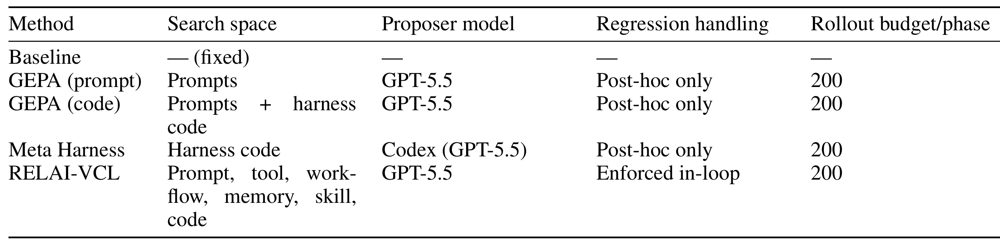
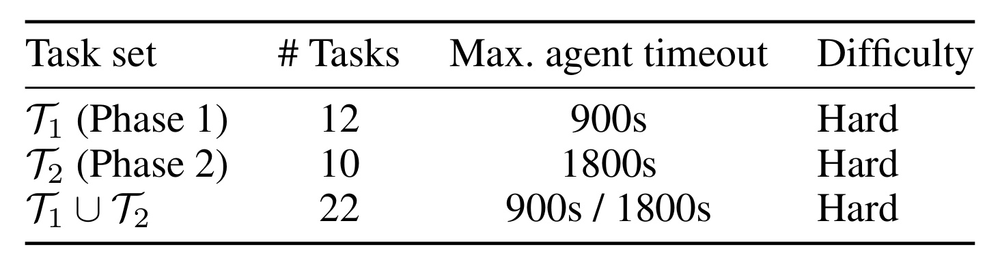
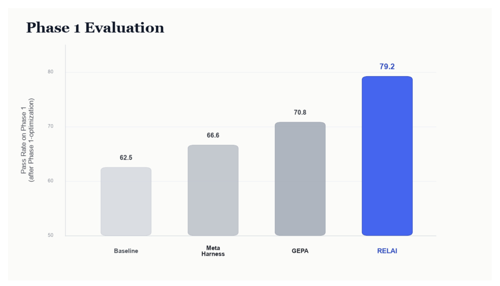
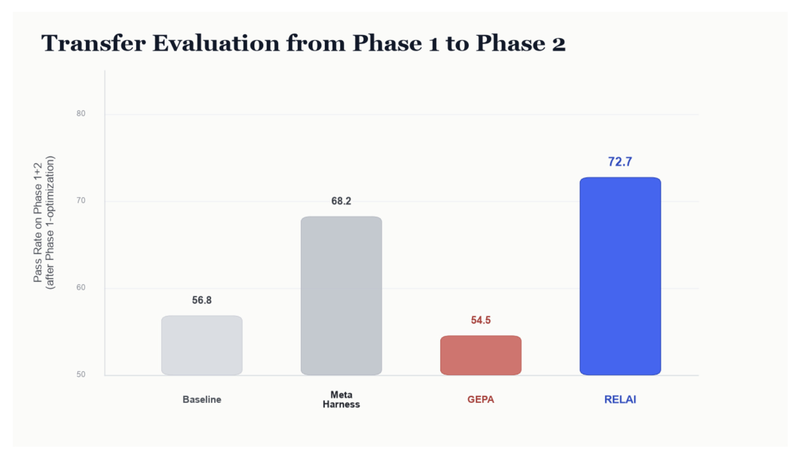
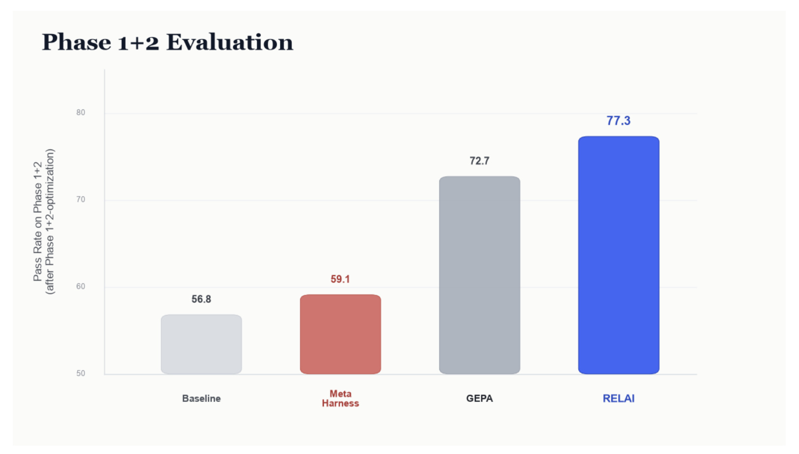
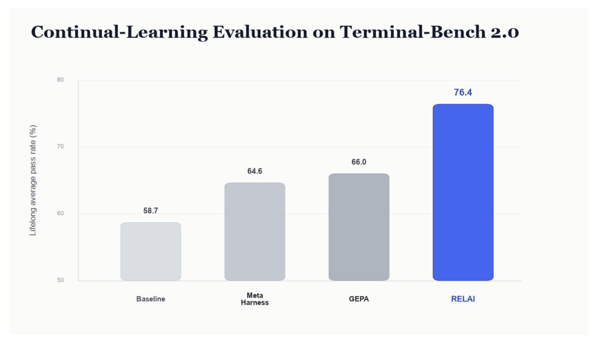
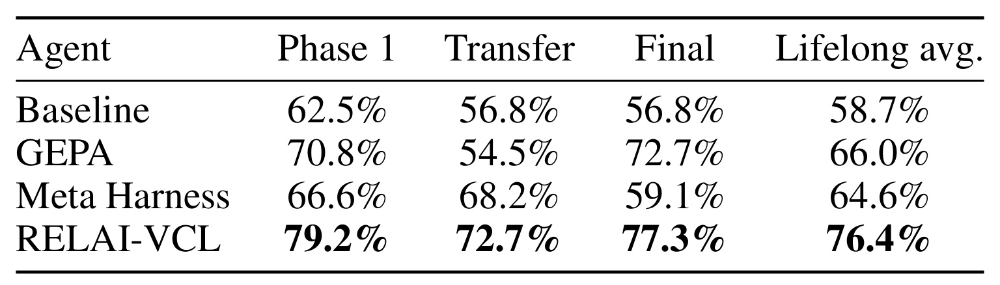

Do Agent Optimizers Compound? A Continual-Learning Evaluation on Terminal-Bench 2.0
这篇技术报告研究一个比“优化一次后分数涨了多少”更接近真实部署的问题：当新的失败和任务持续到来时，同一个 Agent 优化器能否反复作用在已经改过的 harness 上，并让收益继续累积。论文作者为 Wenxiao Wang、Priyatham Kattakinda 与 Soheil Feizi，一作主机构及合作机构均为 RELAI.ai。论文入口为 arXiv:2607.14004，官方 artifact 仓库为 Continual-Learning-Terminal-Bench，其中公开了 baseline、两个阶段和三类优化器的 Agent 产物。
现有 Agent 优化结果大多只证明：在固定任务集上用一次搜索预算，可以把同一任务集的分数推高。它们没有回答部署中更关键的递归问题：第一轮已经修改过 harness 后，第二轮面对新任务的优化，是否既能吸收新能力，又不会侵蚀第一轮已经获得的能力。
1. 背景和问题
1.1 一次性 benchmark 把三种能力压成了一个分数
Agent optimizer 的优化对象不是一定要落在模型参数上，也可以是系统提示词、工具定义、上下文组织、记忆、控制流乃至整个 harness 代码。GEPA 一类方法根据 rollout trace 做反思式提示词变异；Meta Harness 让外层 coding agent 直接修改 harness；实际生产中的 trace 诊断、技能积累和记忆整理系统，也在不同层次上执行“从失败中更新 Agent”。这些系统常用的证明方式却高度相似：给定一个固定评测集，让优化器搜索一次，最后报告优化后分数。只要分数高于初始 Agent，就把它当成优化器有效的证据。
这个口径遗漏了时间维度。生产 Agent 不会只被改一次：上线后出现新的任务类型、工具升级、用户路径变化或一批新失败，团队会在第一轮修改基础上继续调 prompt、补工具或改控制逻辑。此时至少有三种不同能力。第一种是静态优化强度，即在当前搜索所见任务上能涨多少；第二种是对未见任务的迁移能力，即第一轮改动能否在没有针对新任务继续搜索时仍然有益；第三种是继续优化能力，即把新任务纳入目标后，第二轮更新能否在不破坏旧能力的情况下再前进一步。单阶段结果只测第一种，不能区分“高分来自可迁移机制”还是“高分来自对评测样本的捷径”。
论文把这种区别称为 compounding question。这里的“复利”并不是每轮分数必须单调增加，而是要求两个条件同时成立：第一轮更新至少要对新到任务产生正迁移；第二轮从第一轮产物出发继续搜索时，还要保住已有能力并改善扩展后的任务集合。GEPA 和 Meta Harness 的实验结果恰好给出两个方向相反的失败例子：前者第一阶段涨分明显，却在新任务加入后低于未优化 baseline；后者的第一阶段修改较保守、迁移不错，但第二阶段所有候选都比既有 Agent 差，最终无法把迁移优势继续转成增量。若只看其中任意一个静态切片，这两种风险都会被隐藏。
1.2 与灾难性遗忘和 benchmark 过拟合的关系
这个问题和持续学习中的灾难性遗忘相似，但更新载体不同。经典持续学习讨论参数在新数据上训练后遗忘旧任务，例如 Elastic Weight Consolidation 通过限制重要参数偏移来保护过去能力。本文不更新底层 LLM 权重，而是在 prompt、工具、工作流、技能和控制代码层搜索候选。因此需要保护的不是某组参数，而是“旧 Agent 已经能稳定完成的行为”。RELAI-VCL 的思想是把无回归要求嵌入候选接受过程：一个候选即使改善新任务，只要破坏先前已通过任务，也不能进入下一状态。
另一条相关脉络是固定 proxy 上的过拟合。只要任务集有限、搜索预算足够，优化器就可能学到满足当前 verifier 的狭窄规则，而不是改善一般终端问题求解能力。论文在 GEPA 第一阶段 prompt 中发现了具体迹象：初始 prompt 只有 5 行，第一阶段扩展到 103 行，第二阶段达到 195 行；新增内容按任务名组织，包含 configure-git-webserver、torch-tensor-parallelism 等任务的路径、错误字符串与处理步骤。这样的知识对当前样本非常有效，却可能在任务分布变化时成为干扰。论文因此不是抽象地声称“GEPA 会过拟合”，而是把负迁移结果与产物中的样本特定信息放在一起解释。
不过，反方向同样值得警惕：不写任务特定规则，也不等于能继续学习。Meta Harness 第一阶段接受的改动是通用的 I/O 边界加固，包括更可靠的命令结束标记检测、错误工具参数的防御性处理；这些修改确实迁移得更好。第二阶段候选进一步压缩冗长终端输出，理论上有利于控制上下文，但评测中所有第二阶段候选都低于第一阶段 Agent。它说明“泛化的修改”与“下一轮还能叠加收益”不是同一性质，持续优化协议必须把二者分别测出来。
1.3 为什么选 Terminal-Bench 2.0，以及它没有覆盖什么
Terminal-Bench 2.0 提供带自动 verifier 的终端任务，覆盖系统管理、软件工程、机器学习基础设施、密码学、图形与生物信息等方向。每个任务能在容器里重复运行并得到 pass/fail，因此适合在 A0、A1、A2 多个 Agent 状态上反复测量。论文从其中 hard 难度任务构造两阶段任务流，让第一阶段任务和后到任务使用同一难度标签，并为三种 optimizer 固定相同的 rollout 预算。这比把不同论文中的单点榜单结果直接横向比较更干净。
但它仍然只是“最小持续学习”设置。T1 与 T2 中的任务彼此较松散，生产系统的失败往往共享同一工具、数据源和业务策略，相关性更强；Terminal-Bench 的 verifier 可重复、反馈完整，而线上失败可能只有一次轨迹，无法复现，也没有可靠判分器；实验只有两轮任务到来，尚不能观察多轮更新后约束是否越来越难满足、harness 是否膨胀、搜索是否停滞。因此本文更准确的价值是提出一个诊断协议，并在一个可验证底座上给出首批对照，而不是证明某种 optimizer 已普遍解决终身学习。
2. 方法
2.1 两阶段任务流与四个评价量
论文先定义初始任务集 \(T_1\)、之后到来的任务集 \(T_2\)，以及所有方法共享的初始 Agent \(A_0\)。第一阶段，optimizer 只在 \(T_1\) 上获得固定预算，从 \(A_0\) 产生 \(A_1\)。随后做两次不同评测：一是在 \(T_1\) 上测传统静态优化效果；二是在不允许任何进一步更新的前提下，把同一个 \(A_1\) 放到 \(T_1\cup T_2\) 上，测第一轮修改对新任务的迁移。第二阶段则从各方法自己的 \(A_1\) 出发，在联合任务集上再给一份相同预算，得到 \(A_2\)，最后测联合集通过率。
每个任务对每个 Agent 重复运行两次。若 \(R=2\)，一次成功记为 1，失败记为 0，则任务可能得到 0、0.5 或 1 的平均成功分。任务集通过率定义为：
符号解释：\(A\) 表示待评测 Agent，\(T\) 是任务集合，\(|T|\) 是任务数，\(R=2\) 是每个任务的重复试验次数，\(\mathbf{1}[\cdot]\) 是成功指示函数。这个定义按“任务 × 重复次数”等权平均，不给某个耗时更长或领域更复杂的任务额外权重；因此通过率适合比较总体成功频率，却不会表达任务价值或成本差异。
四个报告量依次是：
符号解释：\(A_1\) 只由第一阶段 \(T_1\) 驱动得到，Phase-1 衡量 optimizer 对搜索内任务的静态增益。它最接近通常论文里的单次 benchmark 分数，但不能单独证明泛化。
符号解释：这里仍使用 \(A_1\)，关键约束是新任务 \(T_2\) 尚未进入任何优化过程。Transfer 因而隔离“第一轮修改自然外推到新任务”的能力；若先让 optimizer 看过 \(T_2\)，这个指标就会退化成普通联合集调优。
符号解释：\(A_2\) 从各方法自己的 \(A_1\) 继续优化而来，Final 同时受第一阶段遗产和第二阶段搜索影响。它要和 Transfer 配对阅读：Final 高但 Transfer 低，可能只是每轮都对当前任务重新过拟合；Transfer 高但 Final 下降，则说明 optimizer 无法稳定叠加更新。
符号解释：LifelongAvg 是三个阶段通过率的无权平均，用一个数同时奖励静态强度、迁移和继续提升。baseline 从不被再优化，所以它的 Transfer 与 Final 按定义相同。这个平均值适合做摘要，不适合替代阶段分解，因为两个 optimizer 可能平均分接近，却在完全不同的阶段失败。
2.2 共同 baseline 与三种 optimizer
公平比较的核心是起点和预算固定。所有方法都从同一个 TerminusKira baseline 的私有副本开始，底层 LLM 为 GPT-5.5，运行框架基于 Harbor 的 Terminus2。该 Agent 使用原生工具调用，工具包括：向 tmux 发送命令并用结束标记轮询的 execute_commands；要求 Agent 先复核最小改动和环境状态、第二次调用才真正结束任务的 task_complete；以及读取容器内图片并作为多模态输入的 image_read。每种 optimizer 可以改自己的 harness 副本，不共享一个可变 Agent，因而不会互相污染 A1 或 A2。

Table 2 需要从右向左读出论文的控制变量。最右列显示三种 optimizer 每阶段都用 200 个 rollout，proposer 配置也都建立在 GPT-5.5 上；左侧真正不同的是搜索空间和候选接受机制。GEPA prompt 版只搜索提示词，code 版还允许编辑 harness，但 code 版第一阶段没有生成有效候选，之后被排除。Meta Harness 直接让 Codex proposer 改 harness 代码。RELAI-VCL 的候选范围最宽，可以涉及 prompt、工具、工作流、memory、skill 和 code。更关键的是倒数第二列：GEPA 与 Meta Harness 对旧任务回归至多事后观察，RELAI-VCL 则在搜索环内强制检查。表格因此同时暴露一个解释上的混杂：最终差异既可能来自回归约束，也可能受到搜索空间和候选生成过程不同的影响，论文没有做“同一搜索器仅开关回归约束”的严格消融。
GEPA 使用 rollout trace 的自然语言反思来产生 prompt 变异，并按当前任务集反馈保留候选。其 prompt-only 版本进入两个阶段；code 版本第一阶段失败，没有 Phase 2 artifact。Meta Harness 的 proposer 是 Codex，它读取候选代码、轨迹与分数后直接编辑控制实现。第一阶段保留的 I/O 修复不含任务 ID，第二阶段候选压缩包管理、构建、下载和测试日志等重复输出，并保留原始尾部。两者共同特征是：候选先针对当前目标被提出和接受，旧任务是否退化不是塑造搜索方向的硬条件。
2.3 RELAI-VCL 的搜索环内回归控制
RELAI-VCL 的核心不是另一个离线分数，而是候选选择规则。它仍可提出 prompt、工具、流程、记忆、技能或代码修改，但当某个候选改善新目标、同时让先前已经能通过的任务失败时，候选会在搜索过程中被拒绝。这种设计把“不要遗忘”从发布前测试项变成搜索的归纳偏置：搜索器必须寻找兼容已有行为的修改，而不是先最大化当前集分数、再在结束后报告回归。论文没有给出一个可复用的连续 loss 或伪代码，因此不能把它误写成某个确定的拉格朗日目标；可被原文支持的机制层结论是“回归候选不被接受”。
第一阶段被接受的 RELAI-VCL 修改包括：用关键词区分代码编辑任务与操作/服务类任务；在接受 task_complete 前执行 verifier discovery 与 runtime contract 检查；tmux 会话中断时返回最后可见终端状态；对异常工具参数做防御处理。第二阶段进一步加入 fatal runtime error 检测，遇到 traceback、缺包或非零退出时阻止过早完成；检查生成代码中会在 chroot/jail verifier 下失效的绝对 workspace 路径；扩大 verifier 文件搜索范围到 /tests/... 等绝对位置。与 GEPA 的命名任务经验不同，这些修改没有写入 Terminal-Bench 任务 ID 或字面预期输出。
从信息流看，RELAI-VCL 的输入不仅是“新任务失败轨迹”，还包括旧 Agent 已经稳定通过的行为集合。proposer 产生候选后，评测环要同时回答两个问题：新目标是否改善，旧能力是否保持。只有同时满足才把候选变成新的 Agent 状态。推理时并不存在一个额外的回归判别模型；约束已经通过离线搜索决定了最终 harness 内容。代价是每个候选需要重跑旧任务验证，任务数随时间增长时评测成本可能快速上升，而且现实生产中未必能复现旧失败或获得完美 verifier。也就是说，论文证明了约束在当前可重复环境中的关联收益，却尚未解决如何把这一机制扩展到稀疏、噪声和不可重放反馈。
3. 实验结果
3.1 任务拆分、预算与评价口径
实验从 Terminal-Bench 2.0 的 89 个任务中使用 hard 子集。数据集共有 30 个 hard 任务：T1 取 12 个 agent timeout 为 900 秒的任务；T2 取另外 10 个 timeout 为 1800 秒的任务；剩余 8 个 timeout 为 3600 或 7200 秒的 hard 任务被排除。联合集共 22 个任务，领域包括系统编程、密码学、机器学习基础设施、图形和生物信息。论文强调这些领域描述只是定性归纳，Terminal-Bench 本身没有给每个任务提供统一主题标签。

Table 3 明确了“新任务”不是从 easy 或 medium 难度混入，而是与 T1 一样标成 hard；这减少了按难度标签造成的直接偏差。但 T2 的最大 agent timeout 是 1800 秒，正好是 T1 的两倍，说明两个阶段仍不完全同分布。timeout 往往反映任务预期耗时或复杂度，不能简单把 Transfer 从 T1 的 79.2% 降到联合集 72.7%解释成遗忘，因为加入更长任务本来就会拉低总体通过率。正确比较是同一个联合集上不同 Agent 的横向结果，以及优化后 Agent 是否高于未优化 baseline。
三种 optimizer 在 Phase 1 都有 200 rollout，只针对 12 个 T1 任务；Phase 2 再各给 200 rollout，从各自 A1 出发优化 22 个联合任务。每个任务评测两次。这一控制保证“谁拥有更多 rollout”不是主要解释，但论文没有报告多个独立 optimizer seed、置信区间或显著性检验。由于总任务数只有 12 或 22、每任务只重复两次，一次 trial 的改变就会明显影响百分比，数值应当被看作这个 protocol 下的确定性观测，而不是已充分估计的总体期望。
3.2 第一阶段：静态优化都有效，但强度不同
在 12 个 T1 任务上，未优化 baseline 为 62.5%，GEPA prompt 达到 70.8%，Meta Harness 为 66.6%，RELAI-VCL 为 79.2%。因此 RELAI-VCL 相对 baseline 提升 16.7 个百分点，相对当时最强替代方法 GEPA 高 8.4 个百分点；GEPA 也提高约 8.3 点，Meta Harness 提高约 4.1 点。若论文只报告这一阶段，结论会是三种 optimizer 都有效，差别只是优化强度。

Figure 2 的关键不只是蓝色 RELAI 柱最高，而是四根柱都高于 baseline。它复现了传统 Agent optimizer 论文最常见的证据形态：搜索任务集和评测任务集一致，分数上涨就被解释为 harness 改善。RELAI-VCL 的 79.2%确实是强结果，但从这张图无法判断修改是否编码了 T1 样本细节，也无法知道第二轮更新会不会破坏它。论文后续两个阶段的必要性正来自这种不可辨识性。图中 Meta Harness 只小幅上涨也不能立即判为弱方法，因为保守、通用的改动可能牺牲当前集增益而换来更好的迁移。
产物检查为这种解释提供了机制线索。RELAI-VCL 第一阶段增加的是任务类型分类、完成门控、会话恢复和参数防御，没有任务 ID 或字面答案。GEPA prompt 则从 5 行膨胀到 103 行，加入按具体任务命名的 lessons。这里仍需保持证据边界：产物中有样本特定内容与之后负迁移相一致，但没有“删除这些内容后迁移恢复”的消融，因此不能单凭相关性断言某一条 lesson 造成了多少下降。
3.3 无更新迁移：静态高分不等于泛化
Transfer 阶段把 A1 直接放到 22 个 \(T_1\cup T_2\) 任务上，不给 optimizer 任何查看或适应 T2 的机会。未优化 baseline 在联合集为 56.8%；GEPA 为 54.5%，低于 baseline 2.3 个百分点；Meta Harness 为 68.2%；RELAI-VCL 为 72.7%。论文还报告 RELAI-VCL 在 T2 单独任务上的通过率为 65.0%，约比 baseline 高 15 点，说明它的优势不只是保住 T1 旧题，而确实延伸到未参与搜索的新题。

Figure 3 把第一阶段的排序重新洗牌。GEPA 在 T1 上曾达到 70.8%，加入未见任务后却只剩 54.5%，甚至低于同一联合集上的未优化 Agent。这里不能把 70.8% 与 54.5%的差全部叫作“遗忘”，因为分母从 12 个任务变成 22 个、T2 也更长；真正有力的信号是 GEPA 在相同联合集上落后 baseline。Meta Harness 的 68.2%则说明第一阶段通用 I/O 加固能够跨任务起效。RELAI-VCL 进一步达到 72.7%，支持“回归感知候选更可能避免狭窄捷径”的解释，但这仍是该任务人口上的经验关联。
这个阶段揭示了静态榜单的一个实际风险：如果工程团队只把 optimizer 输出送回原回归集，GEPA 会被接受，因为它从 62.5%提高到 70.8%；一旦产品面扩大，修改可能把总体能力推到未优化版本以下。对推荐、搜索或 RAG Agent 也有对应关系：针对当前 bad case 集硬编码规则，离线命中率会提高，但新内容类型、长尾用户或新工具出现后可能增加冲突。更可靠的验收应至少保留一组不驱动当前搜索的到达后任务，并把“无更新迁移”与“纳入新任务后的再训练”分开记录。
3.4 第二阶段再优化：能迁移还不够，还要继续提升
第二阶段从每种方法自己的 A1 出发，把 T1 与 T2 一起纳入搜索目标，再给 200 rollout。baseline 不更新，所以 Final 仍为 56.8%。GEPA 从 Transfer 的 54.5%恢复到 72.7%，说明当 T2 真正进入优化目标后，它仍能在当前联合集上找到高分 prompt；Meta Harness 却从 68.2%降到 59.1%，论文称第二轮生成的每个候选都比现有 Agent 差，最终保留的 output-noise compaction 候选也没有维持迁移分数；RELAI-VCL 从 72.7%继续升到 77.3%，是 Final 阶段最高结果。

Figure 4 不能独立证明 GEPA 已经“修复”持续学习，因为它的高分是在 T2 已进入搜索目标后得到。它呈现的是一种追随当前任务集的能力：任务被看见后可以涨分，但前一阶段对未见任务的负迁移提醒我们，若再加入 T3，是否再次跌落仍未知。Meta Harness 展现相反问题：第一阶段修改迁移良好，第二阶段却无法找到兼容更新，Final 仅 59.1%，比自己的 Transfer 低 9.1 点。RELAI-VCL 同时满足论文设定的两个条件——未见任务上高于 baseline，纳入新任务后再提高 4.6 点——因此在这个两阶段 protocol 中最符合 compounding。
这里也能看到“搜索环内回归控制”的直接工程含义。若旧任务回归只在候选接受后才统计，optimizer 可能已经沿着破坏旧能力的方向走远；若候选进入新状态前必须通过旧能力检查，搜索会偏向更小、更通用的 intervention。RELAI-VCL 两阶段产物的内容与这一倾向一致：第一阶段是 verifier-shaped 完成门控与错误处理，第二阶段是 runtime fatal error、隔离路径和 verifier 搜索范围，而不是任务答案。但论文未提供候选数量、被回归约束拒绝的比例或无约束 RELAI-VCL 对照，因此“约束如何改变搜索轨迹”仍缺少细粒度消融证据。
3.5 LifelongAvg 与完整分解：一个总分不能替代阶段诊断
将三个阶段无权平均后，baseline 为 58.7%，GEPA 为 66.0%，Meta Harness 为 64.6%，RELAI-VCL 为 76.4%。以 RELAI-VCL 为例，\((79.2+72.7+77.3)/3=76.4\%\)；baseline 因不再优化，Transfer 与 Final 都是 56.8%，所以 \((62.5+56.8+56.8)/3=58.7\%\)。该指标让每种方法同时为静态优化、迁移和再优化负责，而不是只挑最好阶段展示。

Figure 5 展示 RELAI-VCL 相对 GEPA 高 10.4 点、相对 Meta Harness 高 11.8 点，综合差距明显。但 GEPA 的 66.0%与 Meta Harness 的 64.6%非常接近，单看两根柱会误以为两者只是强弱略有不同。实际上，GEPA 的失败集中在 Transfer，Meta Harness 的失败集中在 Final：一个会对未见任务负迁移，另一个会在第二轮更新时失速。LifelongAvg 适合排序，却不告诉工程团队应该修“过拟合”还是“候选接受/搜索稳定性”。
还要注意纵轴从 50%附近开始，视觉柱高差会放大实际百分点差异；判断时应以柱顶标注数值为准。更本质的问题是平均运算给三个阶段相同权重，却没有表达任务到达顺序、每轮优化成本或旧能力的重要性。如果线上旧任务承载更高流量，Transfer/Final 中一次旧能力回归的业务代价可能远高于新任务增加同样百分点，因此实际部署还需要带权风险指标，而不能直接照搬无权平均。

Table 8 才是论文结果最应保留的阅读面板。横向看 GEPA，70.8→54.5→72.7 是“当前集可优化、分布外不稳定、看见新集后恢复”的轨迹；横向看 Meta Harness，66.6→68.2→59.1 是“更新较通用、迁移不错、第二轮无法兼容”的轨迹；RELAI-VCL 的 79.2→72.7→77.3 则在任务扩展时有所下降，但始终是同阶段最高，并在第二轮重新上升。这里的 compounding 不是简单要求三个数字单调，因为 Transfer 的任务集更大、更难；它要求相对同阶段 baseline 的正迁移，以及从 Transfer 到 Final 的继续改善。
证据总体支持论文的限定结论：在相同 baseline、底层 LLM 和 rollout 预算下，只有带 search-loop regression control 的 RELAI-VCL 同时取得正迁移和第二阶段增益。但还不能把差异全部归因于回归控制。RELAI-VCL 的搜索空间比 GEPA prompt 更广，三种方法的 proposer 流程不同；实验没有同一 optimizer 开关约束的消融，也没有多随机种子与更长任务流。因此更稳妥的表述是：在这组两阶段 Terminal-Bench 2.0 实验中，回归感知搜索与最好的持续学习轨迹相伴出现，并且产物内容呈现更通用的修改模式。
4. 总结
4.1 我的判断
这篇论文最重要的贡献不是又增加一个 Agent benchmark 总分，而是把“优化器是否有效”拆成静态增益、零更新迁移和再次优化三个可以分别失败的状态。它用 GEPA 与 Meta Harness 给出很好的对照：静态高分可能来自任务特定捷径，保守更新可以迁移却可能让后续搜索停滞。RELAI-VCL 在当前 protocol 中同时完成了两件事，且 artifact 中的修改确实更像通用运行时防护。因此，把回归检查前移到候选搜索环，而不是只在发布前跑一次回归测试，是值得带回工程系统的原则。
对推荐系统或个性化 Agent，迁移方式不是照搬 22 个终端任务，而是建立“到达批次”。例如第一批 bad case 驱动 prompt/tool 优化，第二批新用户、新内容、新场景先做零更新评测，再进入联合优化；报告同时保留旧批、新批和联合集，而不是只看滚动总分。候选若改善新批却破坏已稳定用户路径，应在搜索阶段淘汰。这样可以减少离线规则对当前样本的过拟合，也能把“能否接新分布”和“能否持续迭代”分开治理。
4.2 局限与风险
第一，任务流只有两阶段，无法判断约束在十轮、百轮后是否仍可行，也没有观察 harness 长期膨胀与搜索空间枯竭。第二，22 个任务彼此较松散且都有可靠 verifier，和共享工具、共享状态、反馈不可重放的生产环境差距很大。第三，每个任务仅两次评测，论文没有报告 optimizer 多随机种子、方差或显著性，少数 trial 就可能改变百分点。第四，RELAI-VCL 与其他方法同时在搜索空间、proposer 流程和回归处理上不同，缺少只开关 in-loop constraint 的因果消融。第五，作者团队提出并评测 RELAI-VCL，虽公开 artifact，但仍需要独立复现来排除实现熟悉度和调参优势。第六，回归检查成本会随历史任务增长；现实系统还可能遇到 verifier 不完美、旧任务规格变化与隐私数据不可长期保留。
最需要避免的误读是把 76.4% 当成“回归控制普遍保证 Agent 复利”的证明。论文只证明了：在一个可重复、两阶段、固定预算的 Terminal-Bench 子集上，RELAI-VCL 的实现取得了最好的阶段轨迹。
4.3 后续跟进
后续至少值得做三类实验。其一，在同一 RELAI-VCL proposer 与搜索空间上关闭回归约束，记录候选接受率、旧任务退化数和最终轨迹，直接隔离机制贡献。其二，把任务流扩展到三阶段以上，并采用滑动到达批、相关任务簇和 verifier 噪声，观察历史回归集增长后成本与可塑性如何变化。其三，对每个 optimizer 运行多个随机种子，报告任务级 bootstrap 区间和每个候选的计算/墙钟成本，而不是只给汇总通过率。进一步还应检查 artifact 中每次 harness diff 的最小性、旧任务保护集合如何维护，以及当旧规格与新规格真正冲突时，系统应采用优先级、版本化还是受控遗忘。
如果这些实验仍支持当前结果，这套 protocol 有机会成为 Agent optimizer 的标准验收方式：任何静态涨分都必须同时回答“对下一批未见任务如何”“再优化一次会怎样”“为了防回归付出多少评测成本”。相比追逐一次榜单峰值，这三个问题更接近一个能够长期上线、长期修复并保持行为稳定的 Agent 系统。